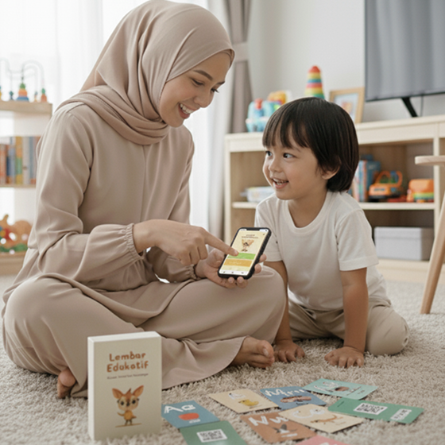
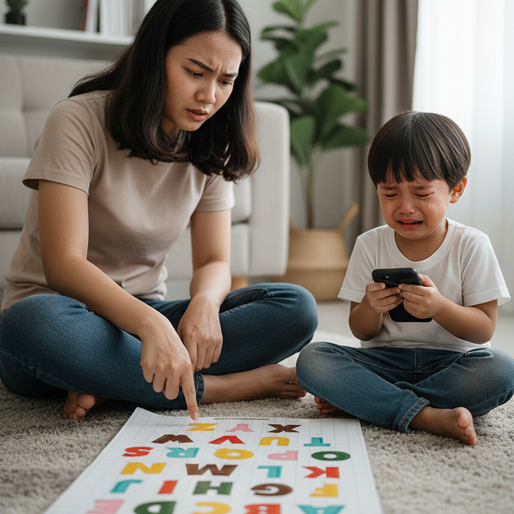
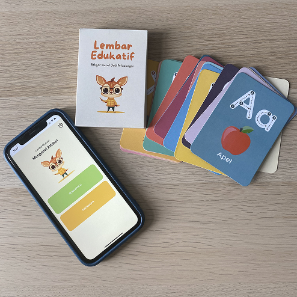
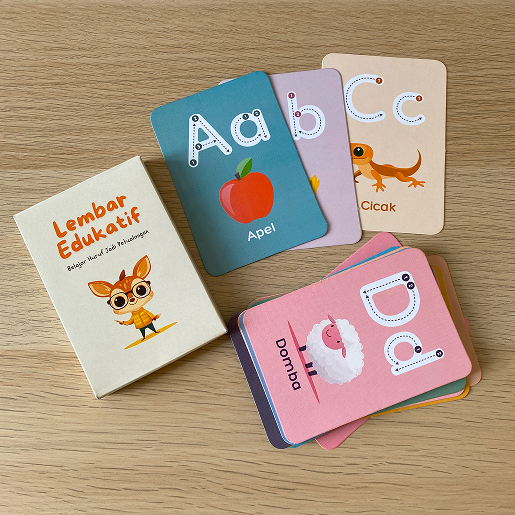
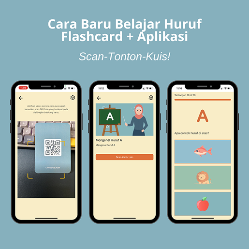
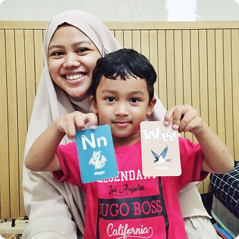
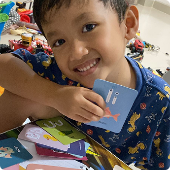
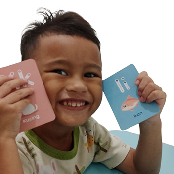
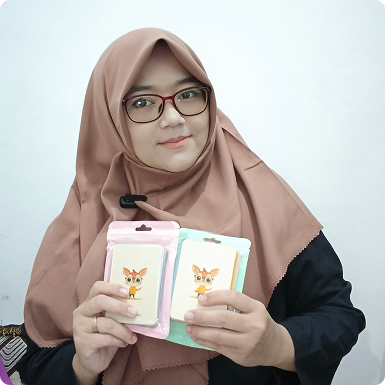

Ubah 15 menit waktu belajar yang penuh drama menjadi sesi interaktif "scan-tonton-kuis" yang seru. LembarEdukatif membuat anak cepat hafal A-Z dan Ayah-Bunda pun tenang.

PESAN SEKARANGSatu paket untuk permainan edukatif tanpa batas.

Jika Anda sering merasakan ini, Anda tidak sendirian. Mengajarkan huruf pada anak usia dini seringkali menjadi tantangan:
Anak Cepat Bosan: Metode konvensional (menunjuk buku atau kartu biasa) terasa monoton dan repetitif.
Orang Tua Cemas: Khawatir dianggap kurang kompeten, cemas si kecil tertinggal saat masuk sekolah, dan takut akan dampak buruk screen-time pasif.
Berujung Drama: Sesi belajar yang seharusnya menyenangkan malah diwarnai rengekan, tangisan, dan suasana tegang.
Belajar seharusnya menjadi petualangan, bukan beban.
LembarEdukatif adalah paket smart flashcard yang memadukan keseruan kartu fisik dengan keajaiban teknologi interaktif. Kami mengubah ponsel di genggaman Anda bukan sebagai distraksi, tapi sebagai jembatan menuju petualangan belajar multisensori (visual, auditori, dan kinestetik) yang disukai anak.

Jika Anda sering merasakan ini, Anda tidak sendirian.
Mengajarkan huruf pada anak usia dini seringkali menjadi tantangan:
Pindai QR Code di belakang kartu huruf menggunakan aplikasi web kami yang ringan dan mudah diakses.
Tonton video animasi pendek (3 menit) yang mengajarkan cara pengucapan, contoh objek, dan cara menulis huruf.
Uji pemahaman anak dengan tantangan kuis acak yang seru dan ramah anak. Lihat skornya dan rayakan kemajuannya!
LembarEdukatif bukan sekadar produk. Ini adalah hasil dari riset dan pengalaman.
Tim Edutech 10 Tahun: Dibangun oleh praktisi teknologi pendidikan yang paham cara kerja teknologi dan psikologi belajar.
Ditinjau Guru PAUD & TK: Setiap materi dipastikan relevan dan sesuai dengan kurikulum pendidikan anak usia dini.
Direview & Direkomendasikan Pengamat Psikologi Anak: Kami memastikan setiap aktivitas selaras dengan tahap perkembangan anak, aman, dan mendukung pertumbuhan kognitif yang sehat.

Scan-Tonton-Kuis!

26 Kartu Huruf Premium (A-Z): Dicetak dengan bahan tebal, rounded corner yang aman untuk anak, dan ilustrasi ceria.
1 Kartu Panduan "Mulai": Petunjuk simpel untuk memulai petualangan belajar Anda.
Akses Penuh Aplikasi LembarEdukatif:
Kemasan Box Eksklusif: Praktis untuk menyimpan kartu agar tidak tercecer.
Update Konten Digital Gratis: Nikmati penambahan video dan bank soal baru secara berkala tanpa biaya tambahan.

"Dulu ngajarin huruf itu drama. Anakku gampang bosan, baru lihat lima huruf udah minta udahan. Tapi pakai LembarEdukatif beda banget, dia paling seneng sama gambar dan videonya. Cuma 1-2 kali tonton video, dia langsung paham hurufnya. Sekarang dia malah antusias minta sendiri!"
- Hani Widiani
Ilustrator & Penulis buku
Padalarang

"Anak saya maunya main HP terus, tapi nulis huruf masih acak-acakan, padahal sebentar lagi mau SD. Sekarang pake LembarEdukatif, HP-nya malah bisa jadi alat bantu. Dia happy banget lihat gambar-gambar lucu di kartu, terus scan buat nonton videonya. Video cara penulisan hurufnya itu ngebantu banget. Sekarang dia udah bisa niru nulis dengan benar. Nggak nyangka, yang tadinya musuh (HP) sekarang malah bisa buat belajar!"
- Bunda Rayyan
Ibu Rumah Tangga
Cikarang

"Anakku tadinya nggak tertarik kalau belajar pakai flashcard biasa, cuma dilihat sebentar terus bosan. Tapi smart flash card ini beda. Alhamdulillah anaknya happy karena yang bikin menarik itu videonya. Videonya mudah dipahami, jadi dia antusias dan bisa ngikutin semua instruksi di dalamnya. Akhirnya dia mau belajar!"
- Mamah Deenan
Pegawai Swasta
Bekasi

"Masalah utama orang tua adalah sering memaksakan gaya belajarnya, sehingga anak tidak nyaman saat belajar huruf. LembarEdukatif menjawab ini dengan brilian melalui pendekatan multisensori. Visual, auditori, dan kinestetiknya dapat semua. Hasilnya? Persepsi anak tentang belajar jadi jauh lebih baik dan menyenangkan. Sangat saya rekomendasikan."
- Intan Nur Amelia, S.Psi, MM
Dosen dan Pengamat Psikologi Anak & Pendidikan
Harga Spesial Peluncuran!
Rp 150.000
Rp 72.000
BELI SEKARANG(GARANSI) Garansi Kepuasan 30 Hari. Jika dalam 30 hari anak Anda tidak menunjukkan minat atau Anda tidak puas, kami akan kembalikan uang Anda 100%. Tanpa ditanya.
Promo terbatas: GRATIS ONGKIR seluruh Indonesia!
LembarEdukatif adalah keduanya! Ini adalah sebuah sistem belajar utuh yang menggabungkan keseruan kartu fisik (flashcard) dengan keajaiban aplikasi web interaktif. Anak-anak tetap memegang kartu (mengasah sensorik fisik), namun saat di-scan, kartu itu "hidup" melalui video dan kuis di HP Bunda. Ini adalah jembatan antara dunia main fisik dan digital.
Flashcard biasa itu pasif dan hanya mengandalkan visual (1 indra). Anak cepat bosan. LembarEdukatif dirancang multisensori (3 indra):
Bunda akan mendapatkan satu set "Kotak Petualangan" yang berisi:
LembarEdukatif dirancang untuk anak usia 3-7 tahun.
Kami merancang LembarEdukatif justru untuk mengatasi masalah "screen time pasif". Daripada anak 1 jam nonton video acak (pasif), LembarEdukatif mengubah HP menjadi alat belajar interaktif dan terarah. Sesi belajarnya singkat (cukup 15 menit/hari), fokus, dan anak harus berinteraksi dengan kartu fisik untuk melanjutkan. Ini adalah solusi mengubah "musuh" (HP) menjadi "kawan" belajar.
Sangat berbeda. YouTube itu pasif, acak, dan penuh distraksi (iklan/video lain). LembarEdukatif adalah lingkungan belajar terstruktur dan terukur:
Kami sangat percaya diri ini tidak akan terjadi. "Bosan" muncul karena metodenya monoton. LembarEdukatif menggunakan 3 langkah powerful Scan → Tonton → Kuis. Bagi anak, ini bukan "belajar", ini adalah "permainan" atau "petualangan". Dia merasa powerful karena bisa membuat video muncul dengan 'sihir' scan dari kartunya. Elemen Kuis (mendapat skor) juga memicu rasa bangga dan antusias untuk "main lagi!"
Tidak perlu download! LembarEdukatif menggunakan teknologi PWA (Progressive Web App). Ini adalah aplikasi berbasis web yang sangat ringan. Bunda cukup scan kartu "Mulai" pertama kali, dan aplikasinya akan terbuka di browser (Chrome/Safari/Peramban web lainnya). Tidak memakan memori HP sama sekali.
Ya, karena video dan kuis diakses secara online. Ini justru kelebihannya! Karena online, kami bisa terus menambahkan bank soal dan video baru tanpa Bunda perlu repot update aplikasi. Cukup koneksi standar (seperti streaming video biasa) sudah lebih dari cukup.
Tidak ada biaya tersembunyi. Bunda cukup beli produknya 1x saja dan mendapatkan akses selamanya ke seluruh konten digital. Ini adalah investasi satu kali untuk petualangan belajar yang bisa dipakai berulang kali, bahkan untuk adiknya nanti. saja dan mendapatkan akses selamanya ke seluruh konten digital. Ini adalah investasi satu kali untuk petualangan belajar yang bisa dipakai berulang kali, bahkan untuk adiknya nanti.
Tentu. LembarEdukatif tidak dibuat asal-asalan. Materi kami disusun oleh tim edutech (teknologi pendidikan) dan telah direview dan direkomendasikan langsung oleh Pengamat Psikologi Anak profesional. Kami memastikan setiap aktivitas selaras dengan tahap perkembangan anak, aman, dan yang terpenting, menyenangkan.